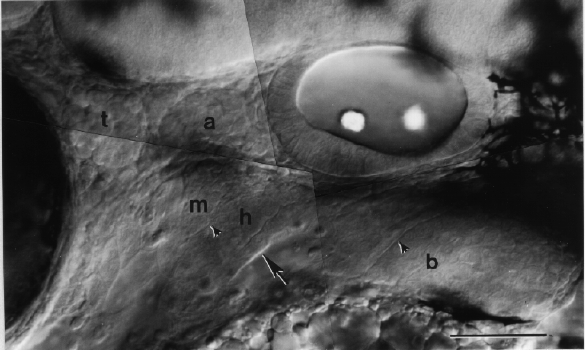

Modified from: Kimmel et al., 1955. Developmental Dynamics 203:253-310. Copyright © 1995 Wiley-Liss, Inc. Reprinted only by permission of Wiley-Liss, a subsidiary of John Wiley & Sons, Inc.
Fig. 31. The pharyngeal arch primordial region at the prim-25 stage (36 h). Left side Nomarski view, dorsal to the top, anterior the left. The plane of focus is more lateral than for Fig. 30, to show the mesenchyme of the pharyngeal arch primordial region that fills most of the field of view between the otic vesicle (to the upper right) and the yolk sac (at the bottom right). Transversely oriented grooves (arrowheads) cut the mesenchymal mound intseparate fields for the individual pharyngeal arches: The most prominent groove, at the arrow, subdivides the whole region into the anterior jaw-forming mandibular (m) and hyoid (h) arches, and the posterior set of 5 branchial (b) arches.
Pigmented melanophores show at the right, posterior to the otic vesicle, and at the left the posterior-most part of the darkly pigmented eye is included. The brain is at the top; the ventral part of the boundary between the midbrain and hindbrain lies just at the upper left. Two cranial sensory neuronal ganglia, the trigeminal ganglion (t) and the anterior lateral line ganglion (a), show between the eye and the ear. Scale bar: 50 µm.

Figure 31